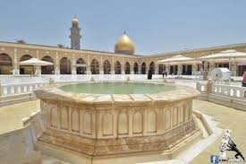
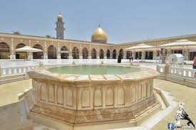
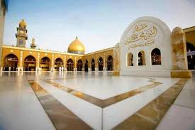
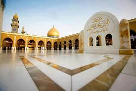

يعد مسجد الكوفة من المساجد الاولى التي شيدت في الاسلام ، فقد بادر القائد العربي المسلم (سعد بن ابي وقاص) لبناء مدينة الكوفة اول ما بادر به من البناء هو بناء مسجد الكوفة جاعلاً المسجد وسط المدينة ومركزها الثقافي والديني والاجتماعي الرئيس. وكان في بداية الامر مسجداً بسيطاً مبنياً بالقصب لوجوده في منطقة بطائح الكوفة، وكانت هذه المادة (القصب) هي التي استخدمت في بناء البيوت ايضاً فعند عملية نزع القصب اثناء الحملات العسكرية التي كان يقوم بها المسلمون وتصدقهم به لم تكن عملية الهدم والبناء تشمل المسجد الجامع فتطور الامر بعد حادثة الحريق الذي وقع في المدينة فاختلفت طريقة اعادة البناء باستخدام مادة الطين واللبن نظراً لمقاومتها الظروف المناخية والكوارث الطبيعية فحدث تغير ملحوظ في مادة بناء مسجد.وقد خط المسجد سنة 17 للهجرة على أرجح الاقوال فقد ذكر ان الخليفة عمر كتب الى سعد ان خط موضع المسجد على عدد مقاتليكم، فخط على اربعين الف انسان ولما انتهى سعد الى موضع المسجد امر رجلاً شديد النزاع قوي الرماية فعلاً بسهم قبل مهب القبلة فأعلم على موقعه ثم علا بسهم اخر قبل مهب الشمال واعلم على موقعه، ثم علا بسهم اخر قبل مهب الجنوب واعلم على موقعه ثم علا بسهم ايضاً قبل مهب الصبا فعلم على موقعه ثم وضع المسجد ودار الامارة في المقام العالي وما حوله.
في رواية اخرى انه قام رجل في وسط موقع الجامع وهو رامٍ شديد فرمى عن يمينه ورمى ورائه ورمى بين يديه ومن خلفه وامر من شاء ان يبني وراء موقع السهمين. وأوضح الطبري في رواية اخرى ان سعد نفسه كان قد اختط المسجد الجامع اولاً واتخذه في موضع صار فيما بعد يشتمل على باعة الصابون وبعد اختطاطه تم توزيع الخطط الاخرى حوله واتخاذ المسجد مركزاً لتلك الخطط والمسجد مربع الشكل متسع الرقعة. ثم بنيت له ظله في مقدمته ولم يكن المسجد انذاك يحتوي على جنبات ومواخير . وصارت البقعة المربعة التي تحتوي المسجد مكاناً لاجتماع الناس كي لا يتزاحموا وبلغت معه ظلة المسجد التي تقع في مقدمته مئتي ذراع طول (100متر) وقد اقيمت على اعمدة او اساطين من الرخام جلب من بلاد فارس ويقال انها جلبت من انقاض الابنية القديمة في مدينة الحيرة وحجارة المناذرة. وكان هدف هذه الظلة التي اعتبرت البناء الوحيد في المسجد وهي بيت الصلاة الواقع في جانب القبلة من المسجد هدفها هوتمنع المصلين من حرارة الشمس صيفاً والامطار والبرودة في الشتاء ومعظم هذا البناء كان بسيطاً شأنه شأن المساجد الاسلامية الاولى فلم يكن محاطاً بجدران خارجية بحيث كان الرجل الجالس في المسجد يرى باب الجسر ودير هند. وزيادة في عزل المسجد عن بقية البيوت السكنية فقد حفر خندقُ حول صحن المسجد فاصبح الخندق يحيط به كي لا يتجاوز أحد عليه او يقحمه بالبناءوقد بقي المسجد على ما هو عليه حتى زمن الخليفة معاوية فزاد فيه المغيرة بن شعبة بعد توليه ولاية الكوفة وبناهُ. واستمر حتى ولاية زياد بن ابيه فزاد في ساحة المسجد وسعته حين زاد فيه (20) الف ذراع وجعله يتسع لستين الف مصلٍ او شخص وقيل ان فيه(9) اجربة ومن بين الاضافات التي شهدها المسجد ابان ولاية (زياد ابن ابيه) تلك التي تتعلق ببناء الابواب والجدران فاتخذ في المسجد اساطين يقال انها جيء برخامها وحجارتها من جبال الاهواز حيث كانت تنقر ثم تثقب ويصيب فيها الرصاص وسفافيد الحديد لترفعه (30) ذراعاً في السماء ثم يسقف المسجد ويعمل له مجنبات ومواخير واتخذ زياد أيضاً في المسجد مقصورة جددها خالد بن عبد الله القسري في ولايته.
كما عمل زياد على اكساء ارضية المسجد بالحصى وكان قبل ذلك مكسواً بالتراب فقد ذكر المؤرخون ان سبب القاء الحصى في المسجد هو ان الناس عندما كانوا يصلون اذا رفعوا ايديهم اتربت فنفضوها فخاف زياد من ان يظن الناس على غابر الايام ان نفض الايدي في الصلاة سنة فزاد في المسجد ووسعه والقى بالحصى في صحن المسجد وكان المسلمون ينتقون منه ضروباً متشابهة.
وفتحت في مسجد الكوفة ابواب عديدة في جوانبه من اشهرها باب السدة وباب كندة وهي من طرف يمين المسجد من جهة الغرب من لزاوية الغربية ثم باب الانماط ،وباب رباب وباب الفيل وكانت تسمى باب الثعبان. وبقى المسجد كذلك حتى قيل انه سقط منه شيء في ولاية الحجاج بن يوسف الثقفي على الكوفة فقام بهدمه واعاد بناءه من جديد.
وقد مثل المسجد المركز الرئيس للمسلمين فهو ملتقاهم ومنتداهم منذ انبثاق نور الاسلامواشيعت روايات تاريخية حول فضل ومقام مسجد الكوفة ((فقيل ان رجلاً اتى علياً فقال : يا أمير المؤمنين اني تزودت زاداً وابتعت راحلة وقضيت حوائجي واريد ان انطلق الى بيت المقدس، فقال له علي انطلق فبع راحلتك وكل زادك وعليك بمسجد الكوفة)) وقال عنه الخليفة علي بن ابي طالب انه : (( احد المساجد الاربعة التي تعظم ولئن اصلي فيه ركعة احب إلي من ان اصلي عشرة في غيره الا في المسجد الحرام ومسجد الرسول وقيل ان المكتوبة في مسجد الكوفة تعادل حجة والتطوع يعادل عمره)). والمسجد بناء مربع الشكل محاط بسور عال يصل ارتفاعه إلى (10) أمتار وطول ضلعه إلى حوالي (140م)، يتخلله من الداخل صف من الحجرات والأواوين، فيما دعّم من الخارج بأبراج نصف دائرية يبلغ عددها (28) برجاً، وعلى سور المسجد مأذنة قديمة غلفت بالزخارف والنقوش والآيات القرانية الكريمة، وقد شُيّدت اليوم على جانبيها منارتين كبيرتين بتصميم معماري جديد يصل ارتفاع كل منهما إلى (30.85م)، وتبلغ مساحة المسجد الكلية (11.162) متر مربع، قسمت إلى(5.642)متر مربع مساحة مكشوفة، فيما سقفت المساحة الباقية وهي (5.520) متر مربع، وبلغت عدد الأعمدة الكلية في المسجد (187) عمود، وكان عدد الأقواس الكلية فيه (56) قوساً، وهناك مأذنة رابعة هي قديمة أيضاً زُيّنت بالنقوش الإسلامية ونصبت فيها ساعة كبيرة وقد غُلفت قبة مأذنة الساعة بالذهب وبمقدار أربعة كيلو غرامات.تصل مساحة محراب أمير المؤمنين علي بن أبي طالب عليه السلام إلى (797) متر مربع، فيما بلغت عدد أعمدته (48) عموداً. وفي المسجد مقامات عدّة تصل إلى تسعة مقامات هي:
1ـ مقام النبي إبراهيم (عليه السلام).
2ـ مقام الخضر(عليه السلام).
3ـ مقام النبي محمد (صلى الله عليه وآله).
4ـ مقام أمير المؤمنين الإمام علي (عليه السلام)ومحل صلاته ومحرابه ومنبره.
5ـ مقام النبي آدم (عليه السلام).
6ـ مقام جبرائيل (عليه السلام).
7ـ مقام الإمام زين العابدين علي بن الحسين (عليه السلام).
8ـ مقام النبي نوح (عليه السلام).
9ـ مقام الإمام جعفر بن محمد الصادق (عليه السلام).
وهناك أماكن أخرى في المسجد لها تاريخ وهي:
1ـ بيت الطشت: وهو المحل الذي حلّ فيه أميرالمؤمنين (عليه السلام)المشكلة المشهورة لإحدى الفتيات.
2ـ دكة القضاء: وهو المحل الذي كان أمير المؤمنين (عليه السلام)يفصل فيه بين الناس ويقضي بينهم.
3ـ سفينة نوح: وهو موضع في وسط المسجد ويُقال إنه المحل الذي رست فيه سفينة نوح النبي (عليه السلام)بعد الطوفان الكبير.
4ـ محراب النافلة للصلاة فيه ركعات قربة إلى الله تعالى.
وللمسجد أبواب خمسة ,هي:
1-باب الإمام الحجة عجّل الله فرجه الشريف.
2-باب الثعبان أو الفيل.
3-باب الرحمة.
4-باب مسلم بن عقيل (عليه السلام).
5-باب هاني بن عروة رضوان الله عليه.
ومسجد الكوفة هو أحد أقدم المساجد في العالم الإسلامي وورد أنه كان معبد الملائكة من قبل خلق آدم، وأنه البقعة المباركة التي بارك الله فيها، وأنه معبد آدم وما بعده من الأنبياء والمرسلين ومعبد الأولياء والصديقين.
وقد وردت في فضل مسجد الكوفة أخبار كثيرة، ذكرها العديد من العلماء، وكذلك ذكرها أهل السير والتواريخ من الخاصة والعامة.
وفيه المحراب الذي كان يؤم امير المؤمنين فيه الصلاة للمسلمين ويروى انه قد ضرب فيه من قبل ابن ملجم مما ادى الى شهادته في عام 40هـ.
ويتسع المسجد لأربعين ألف مصلٍّ، يتوسط صحنه بقعة منخفضة ينزل إليها بسلم وتسمى (السفينة).
وفي فضل مسجد الكوفة وفضل الصلاة فيه فعن ابن نباتة قال: بينما (نحن) ذات يوم حول أمير المؤمنين (عليه السلام) في مسجد الكوفة إذ قال: (يا أهل الكوفة لقد حباكم الله عز وجل بما لم يحب به أحدا، ففضل مصلاكم وهو بيت آدم وبيت نوح وبيت إدريس ومصلى إبراهيم الخليل ومصلى أخي الخضر ومصلاي، وأن مسجدكم هذا أحد المساجد الأربعة التي اختارها الله عز وجل لأهلها، وكأني به يوم القيامة في ثوبين أبيضين شبيه بالمحرم، يشفع لأهله ولمن صلى فيه، فلا ترد شفاعته، ولا تذهب الأيام حتى ينصب الحجر الأسود فيه، وليأتين عليه زمان يكون مصلى المهدي من ولدي ومصلى كل مؤمن ، ولا يبقى على الأرض مؤمن إلا كان به أو حن قلبه إليه، فلا تهجرن وتقربوا إلى الله (عز وجل) بالصلاة فيه، وارغبوا إليه في قضاء حوائجكم، فلو يعلم الناس ما فيه من البركة لأتوه من أقطار الأرض ولو حبوا على الثلج).
وروي عن الامام ابي عبد الله عليه السلام أنه قال: (صلاة في مسجد الكوفة تعدل ألف صلاةٍ في غيره من المساجد).
ودفن الى جوار مسجد الكوفة المعظم سفير الإمام الحسين (عليه السلام) مسلم بن عقيل والصحابي هاني بن عروة والمختار بن أبي عبيد الله الثقفي.
.jpg)
.jpg)
.jpg)
.jpg) 

.jpg) 
